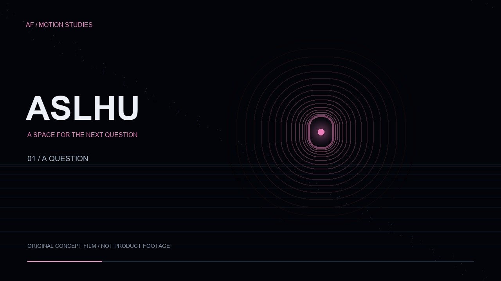

مساحة تجريبية محجوزة للأفكار القادمة؛ لا تُعرض كمنتج مكتمل.
مساحة مستقبلية. هذا وصف لاتجاه المشروع وحالته الحالية، ولا يعني أن كل القدرات المقترحة منفذة أو متاحة.
جزء من مساحة AiFRAHAT للتعلّم والتجريب والربط بين المعرفة البشرية والتقنية.
الاعتمادات: Original procedural motion design for Ai FRAHAT. Concept visualization, not product footage.